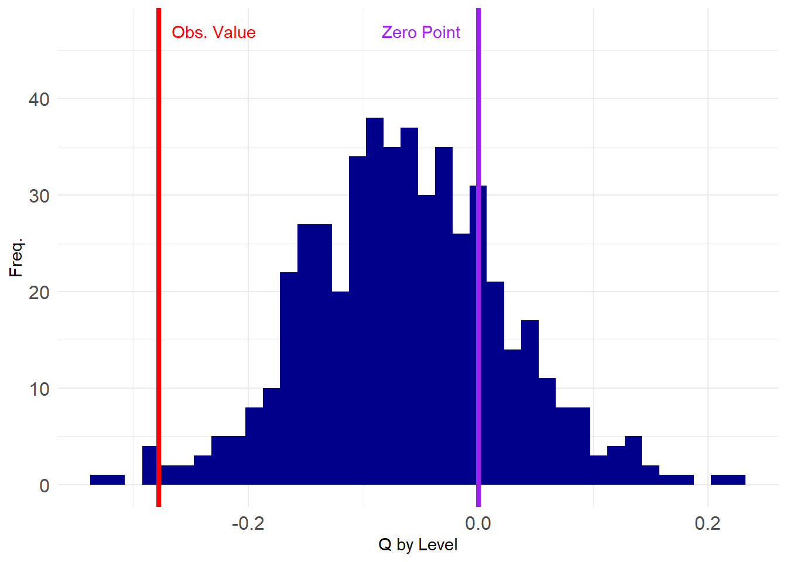

Graph Ensembles in Networks
As we saw in the graph ensemble lesson, there are many approaches to randomizing the structure of one-mode networks when the aim is to create graph ensembles preserving selected properties. These ensembles, in turn, can be used to do null hypothesis testing in networks.
Not surprisingly, a similar suite of techniques exist for the two-mode case, but until recently various approaches were scattered (and reduplicated) across a bunch of literatures in social network analysis, ecology, network physics, and computer science (Neal et al. 2024).
Two-Mode Erdos-Renyi Model
Like with one-mode networks, the simplest null model for two-mode networks is one that preserves the number of nodes and the number of edges. This model, like we saw before, also preserves anything that is a function of these two-quantities. In the two-mode case, this is the bipartite graph’s density and the average degrees of the nodes in each mode (recall that two-mode networks have two average degrees). This is thus a two-mode version of the Erdos-Renyi null model.
Let’s load up the Southern Women (SW) data and see how it works:
Let’s compute some basic network statistics:
d <- sum(A)/(nrow(A)*ncol(A)) #density
ad.p <- mean(rowSums(A)) #average degree of people
ad.g <- mean(colSums(A)) #average degree of groups
d[1] 0.3531746[1] 4.944444[1] 6.357143We can see that the density of the SW network is \(d=\) 0.35, the average degree of people \(\bar{k_p}=\) 4.94 and the average degree of groups \(\bar{k_g}=\) 6.36.
Now, let’s compute something on this network, like the degree correlation between people and groups, answering the question: Do people with lots of memberships tend to join larger groups?
First let’s create an edge list data frame with the incident nodes’ degrees and compute the correlation between the respective degrees:
v.a <- as.vector(A)
rn <- rep(rownames(A), ncol(A))
cn <- rep(colnames(A), each = nrow(A))
rd <- rep(rowSums(A), ncol(A))
cd <- rep(colSums(A), each = nrow(A))
d <- data.frame(p = rn, c = cn, e = v.a, rd = rd, cd = cd)
cor(d[d$e == 1, ]$rd, d[d$e == 1, ]$cd)[1] -0.2783186Which is negative, suggesting degree anti-correlation in this network (people with lots of memberships tend to belong to smaller groups).
Is this value statistically significant net of the network density? To find out, we need to create a two-mode graph ensemble of networks with the same density, number of persons, and number of groups as SW.
A simple approach goes like this. First, let’s create a vectorized version of the adjacency matrix and assign a number from 1:\(M\) (where \(M = |P| \times |G|\), the number of cells in the biadjacency matrix) to each value:
1 2 3 4 5 6 7 8 9 10 11 12 13 14 15 16 17 18 19 20
1 1 0 1 0 0 0 0 0 0 0 0 0 0 0 0 0 0 1 1
21 22 23 24 25 26 27 28 29 30 31 32 33 34 35 36 37 38 39 40
1 0 0 0 0 0 0 0 0 0 0 0 0 0 0 0 1 1 1 1
41 42 43 44 45 46 47 48 49 50 51 52 53 54 55 56 57 58 59 60
1 1 0 0 0 0 0 0 0 0 0 0 0 0 1 0 1 1 1 0
61 62 63 64 65 66 67 68 69 70 71 72 73 74 75 76 77 78 79 80
0 0 0 0 0 0 0 0 0 0 0 0 1 1 1 1 1 1 1 0
81 82 83 84 85 86 87 88 89 90 91 92 93 94 95 96 97 98 99 100
1 0 0 0 0 0 0 0 0 0 1 1 1 1 0 1 1 1 0 0
101 102 103 104 105 106 107 108 109 110 111 112 113 114 115 116 117 118 119 120
0 0 0 1 0 0 0 0 0 1 1 1 1 0 1 0 1 1 0 0
121 122 123 124 125 126 127 128 129 130 131 132 133 134 135 136 137 138 139 140
1 1 1 0 0 0 1 1 1 1 0 1 1 1 1 1 1 1 1 0
141 142 143 144 145 146 147 148 149 150 151 152 153 154 155 156 157 158 159 160
1 1 0 0 1 0 1 0 0 0 0 1 1 1 1 1 1 1 0 1
161 162 163 164 165 166 167 168 169 170 171 172 173 174 175 176 177 178 179 180
1 1 0 0 0 0 0 0 0 0 0 0 1 1 1 1 1 0 0 0
181 182 183 184 185 186 187 188 189 190 191 192 193 194 195 196 197 198 199 200
0 0 0 0 0 0 0 0 0 0 0 0 0 1 1 0 1 1 0 0
201 202 203 204 205 206 207 208 209 210 211 212 213 214 215 216 217 218 219 220
0 0 0 0 0 0 0 1 1 1 1 1 1 0 0 0 0 0 0 0
221 222 223 224 225 226 227 228 229 230 231 232 233 234 235 236 237 238 239 240
0 0 0 0 0 0 0 1 1 1 0 0 0 0 0 0 0 0 0 0
241 242 243 244 245 246 247 248 249 250 251 252
0 0 0 0 0 1 1 1 0 0 0 0 Now we can just permute the labels of the vector, and re-order them to generate a new biadjacency matrix A.perm
s <- sample(1:M)
v.perm <- v.a
names(v.perm) <- s
v.perm <- v.perm[names(v.a)] #reordering vector
A.perm <- matrix(v.perm, nrow = nrow(A)) #creating permuted biadjacency matrix
rownames(A.perm) <- rownames(A)
colnames(A.perm) <- colnames(A)
A.perm 6/27 3/2 4/12 9/26 2/25 5/19 3/15 9/16 4/8 6/10 2/23 4/7 11/21 8/3
EVELYN 1 0 0 0 1 0 0 0 0 0 0 0 1 0
LAURA 0 1 1 0 1 0 1 1 0 0 0 0 0 0
THERESA 0 1 1 0 1 1 0 0 0 0 0 0 0 0
BRENDA 0 0 0 0 0 1 0 0 0 0 0 0 0 0
CHARLOTTE 0 0 0 0 0 0 0 0 0 0 1 0 1 1
FRANCES 0 0 1 1 0 0 1 0 0 1 1 0 1 0
ELEANOR 1 1 1 1 0 1 1 0 1 0 1 1 1 1
PEARL 1 1 1 1 0 0 0 0 0 0 0 0 0 0
RUTH 1 0 0 0 0 0 0 0 0 1 0 1 1 0
VERNE 0 1 0 0 0 0 0 0 0 1 0 1 0 0
MYRNA 1 0 1 0 0 0 0 0 0 1 1 0 0 1
KATHERINE 0 0 0 0 1 0 1 1 1 0 1 0 1 0
SYLVIA 1 0 1 1 0 1 1 1 0 0 0 0 0 0
NORA 0 1 1 0 1 0 1 1 0 0 0 0 1 1
HELEN 0 1 0 0 1 1 0 1 1 0 1 0 0 1
DOROTHY 0 0 0 0 1 0 0 1 1 1 0 0 1 1
OLIVIA 1 0 0 0 1 0 0 1 0 0 0 0 0 0
FLORA 0 0 0 1 1 0 0 1 0 0 1 1 0 0We can verify that A.perm has the same basic network statistics as A:
d <- sum(A.perm)/(nrow(A.perm)*ncol(A.perm)) #density
ad.p <- mean(rowSums(A.perm)) #average degree of people
ad.g <- mean(colSums(A.perm)) #average degree of groups
d[1] 0.3531746[1] 4.944444[1] 6.357143But not the same degree distributions:
EVELYN LAURA THERESA BRENDA CHARLOTTE FRANCES ELEANOR PEARL
8 7 8 7 4 4 4 3
RUTH VERNE MYRNA KATHERINE SYLVIA NORA HELEN DOROTHY
4 4 4 6 7 8 5 2
OLIVIA FLORA
2 2 EVELYN LAURA THERESA BRENDA CHARLOTTE FRANCES ELEANOR PEARL
3 5 4 1 3 6 11 4
RUTH VERNE MYRNA KATHERINE SYLVIA NORA HELEN DOROTHY
4 3 5 6 6 7 7 6
OLIVIA FLORA
3 5 6/27 3/2 4/12 9/26 2/25 5/19 3/15 9/16 4/8 6/10 2/23 4/7 11/21
3 3 6 4 8 8 10 14 12 5 4 6 3
8/3
3 6/27 3/2 4/12 9/26 2/25 5/19 3/15 9/16 4/8 6/10 2/23 4/7 11/21
7 7 8 5 9 5 6 8 4 5 7 4 8
8/3
6 We can now package the two-mode permutation steps into a function called tm.perm:
And generate an Erdos-Renyi graph ensemble for the SW data:
We then package the steps above into a two-mode degree correlation function:
And compute it across our ensemble:
[1] 0.0760021893 -0.1348203679 -0.1694265983 0.0718510150 -0.0600115860
[6] -0.2374190808 0.0237031449 0.1173741356 -0.0260733311 0.1416253809
[11] 0.1184189968 -0.0289596593 -0.0730215167 0.0095106371 -0.1964173575
[16] 0.1596845191 -0.1355133618 0.0180448467 -0.1087077279 -0.1046313791
[21] 0.0811773307 -0.1700579702 -0.1683615931 -0.0879076569 -0.1708282944
[26] -0.1234216407 -0.1222169590 -0.1752430252 -0.0771362047 0.0374001159
[31] -0.3363039453 -0.0215314138 -0.1361914116 0.0236148748 0.0904123313
[36] 0.0854149823 -0.1092669645 -0.0968902488 0.0655271276 0.0839894527
[41] -0.1372253130 -0.0250088463 -0.0752489834 -0.0646135286 -0.0050636524
[46] -0.1434413069 0.0394530627 -0.0294602605 0.0621823678 0.0452125858
[51] 0.1488401015 -0.1589331412 -0.0150605405 -0.1804322595 0.0553501794
[56] -0.1313982596 -0.1601437081 -0.0834589259 -0.0318101556 -0.0418927041
[61] -0.1673209567 -0.0781911355 -0.0237342903 -0.0468442301 -0.1678850228
[66] -0.1131891529 -0.1385607565 -0.0370619914 -0.1153888854 -0.2140948633
[71] -0.0023642670 -0.0620337449 -0.0435028327 0.0480923464 0.0542443957
[76] -0.0877253584 -0.0246771154 0.0005149925 0.1174570125 -0.1311654686
[81] -0.0993590626 -0.0003062831 0.0357750520 -0.1040233078 -0.2628413829
[86] -0.1411546883 -0.0616393144 0.0397847088 -0.2262041963 -0.1711172380
[91] -0.0729372910 -0.0718569434 -0.2789671901 -0.1370995229 0.0519466480
[96] -0.0714731685 -0.0634881474 -0.0203817674 -0.0830534979 0.0228451012So let’s see how our observed value stacks up in the grand scheme:
library(ggplot2)
p <- ggplot(data = data.frame(round(corrs, 2)), aes(x = corrs))
p <- p + geom_histogram(binwidth = 0.015, stat = "bin", fill = "darkblue")
p <- p + geom_vline(xintercept = tm.deg.corr(A),
color = "red", linetype = 1, linewidth = 1.5)
p <- p + geom_vline(xintercept = 0, linetype = 1,
color = "purple", linewidth = 1.5)
p <- p + theme_minimal() + labs(x = "Q by Level", y = "Freq.")
p <- p + theme(axis.text = element_text(size = 12))
p <- p + annotate("text", x=-0.05, y=47, label= "Zero Point", color = "purple")
p <- p + annotate("text", x=-0.23, y=47, label= "Obs. Value", color = "red")
p
Which looks close to the tail end of the negative spectrum. We can compute the value that corresponds to the 99th percentile of the assortativity distribution from the ensemble and then see if what observe is below that value (corresponding to \(p < 0.01\)).
Which is definitely true in this null graph ensemble, suggesting that degree anti-correlation is present in the SW data, net of density.
As before, if we wanted a more stringent two-tailed we would need to create a vector with the absolute value of the two-mode degree correlation:
Which is stil statistically significant at conventional levels.